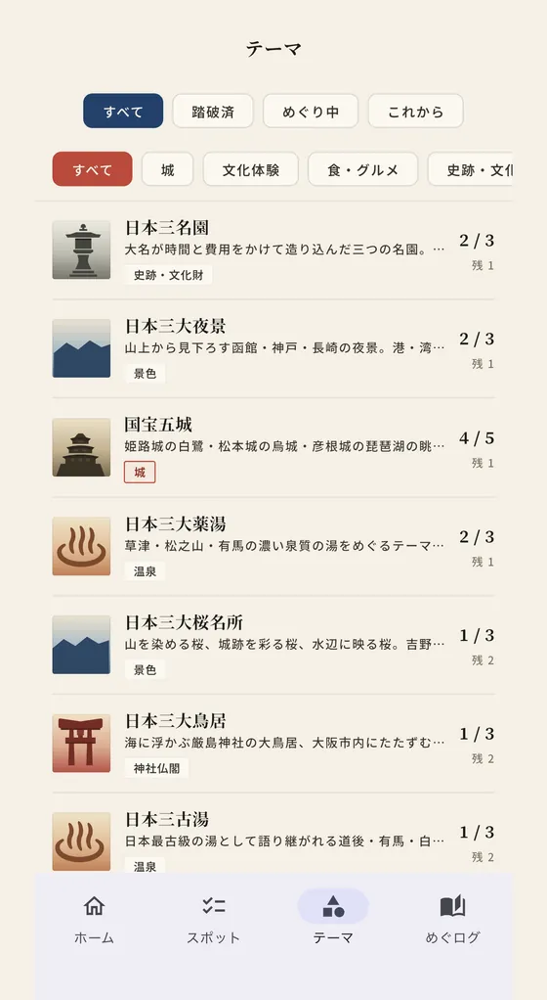
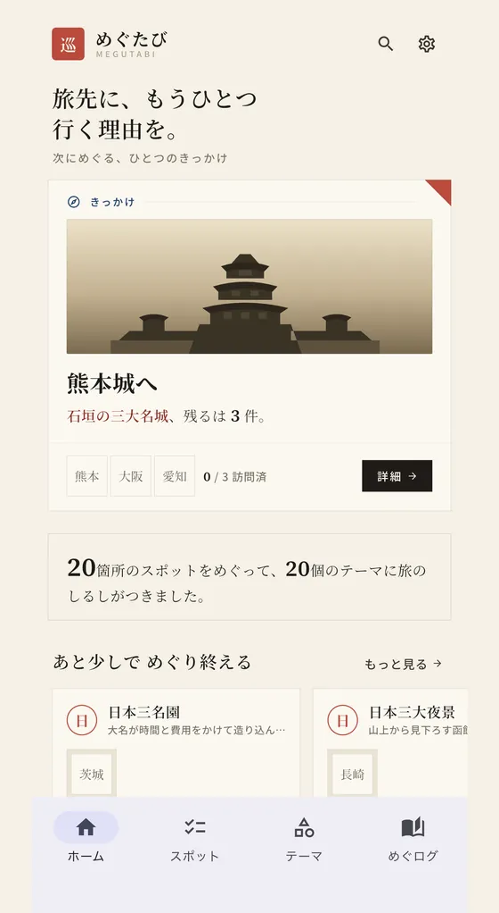
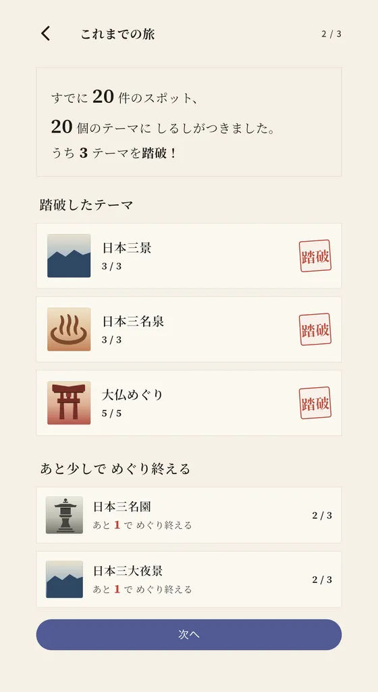
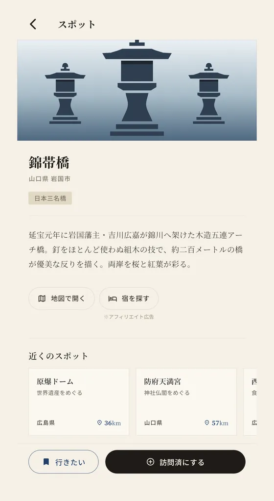
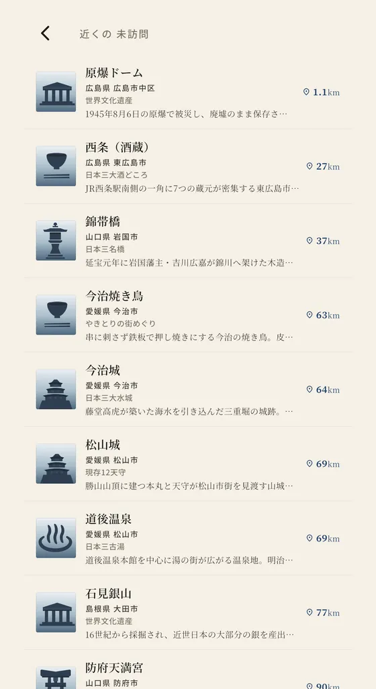
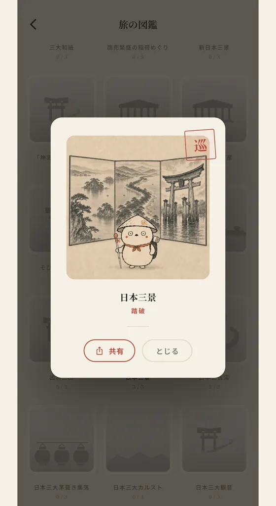
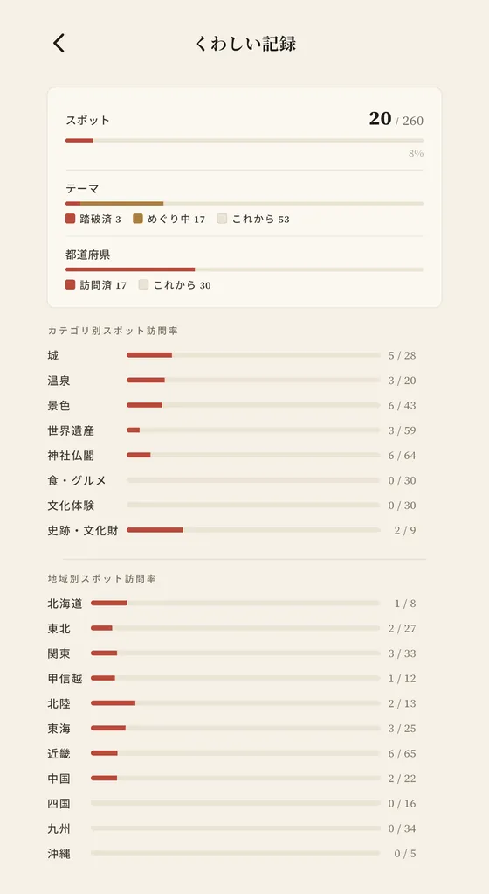

JOURNEY FINDER
旅先に、もうひとつ
行く理由を。
めぐたびは、旅に「行く理由」を与えるテーマ別に、全国の名所を発見・記録・収集する無料の旅アプリです。 はじめに行ったことのある名所を選んでいくと、すでに踏破しているテーマがあるかもしれません。
テーマの最後の一か所にしるしをつけると、達成画像が一枚。 名所を集めるほどテーマが埋まり、踏破するほど旅の図鑑に達成画像が増えていきます。
GET IT ON
Google Play
スマホで読み取る


- 73テーマ収録 全国260スポット・47都道府県を収録。現存12天守・日本三景・世界遺産など、旅の目的地になるスポットを厳選。
- 訪問記録 行った場所にしるしをつけて、コレクション感覚で記録。テーマの達成状況をひと目で確認できます。
- 達成画像と旅の図鑑 テーマを踏破すると達成画像が一枚。旅の図鑑に並べて見返したり、そのまま共有できます。
- 行きたいリスト 気になるスポットを保存して、次の旅のプランに活かせます。
- 近くの未訪問を探す 現在地から近い未訪問のスポットを距離順に表示。旅先や外出先で、寄り道の候補が見つかります。
- 無料・アカウント不要 すべての機能を無料で使えます。登録・ログインは不要で、利用状況の収集や外部への送信もありません。スポット情報はアプリに収録済みなので、電波が届かない場所でも開けます。
アプリの画面
はじめに過去の旅を記録するところから、テーマを踏破して達成画像が届くまで。実際の画面で紹介します。
-
過去の旅が、そのまま記録になる 行ったことのある名所を選んでいくと、すでに踏破しているテーマが見つかります。

-
城、温泉、世界遺産。テーマで探す 8つのジャンル・全73テーマから、次にめぐりたいテーマを選べます。
-
行く理由が、ひと言で分かる 営業時間や口コミではなく、そこへ行く理由だけを短く載せています。

-
旅先で、近くの未訪問が見つかる 現在地から近い未訪問のスポットを距離順に。寄り道の候補が見つかります。

-
踏破の記念に、一枚の絵が届く テーマの最後の一か所にしるしをつけると、達成画像が旅の図鑑に加わります。

-
めぐった軌跡が、積み上がる スポット・テーマ・都道府県の進み具合を、いつでも見返せます。

収録テーマ（一部）
城、温泉、神社仏閣、世界遺産から、食や文化体験まで。8つのジャンルにまたがる全73テーマを収録しています。
- 景色：日本三景／新日本三景／日本三大夜景／日本三大名瀑
- 城：現存12天守／国宝五城／天空の城
- 温泉：日本三名泉／日本三古湯／三大秘湯
- 神社仏閣：熊野三山／出羽三山／大仏めぐり
- 世界遺産：世界文化遺産／世界自然遺産／古都京都の文化財
- 食：日本三大そば／本場で味わう五大うどん／日本三大酒どころ
- 文化体験：日本六古窯／日本三大茅葺き集落／がっかり名所めぐり
- 史跡・文化財：日本三名園／日本三名橋／日本三大史跡
テーマ別ガイドを見る 現存12天守ほか、テーマごとの一覧と巡り方を紹介しています。